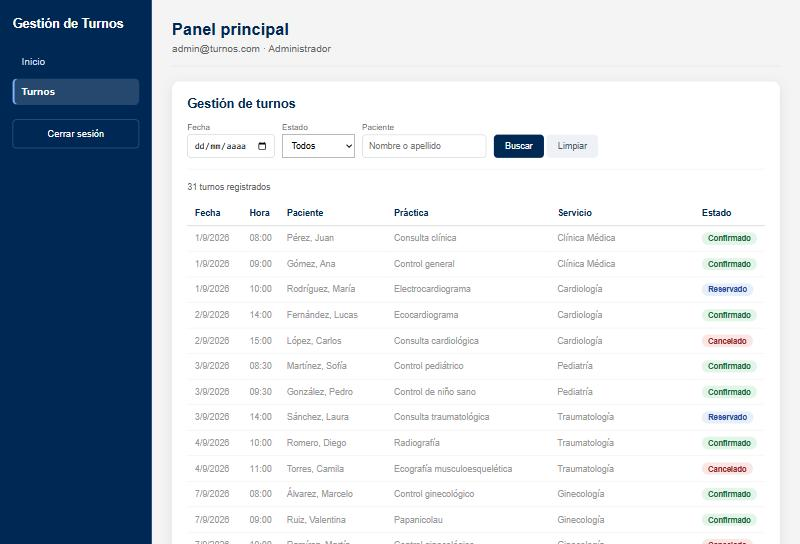
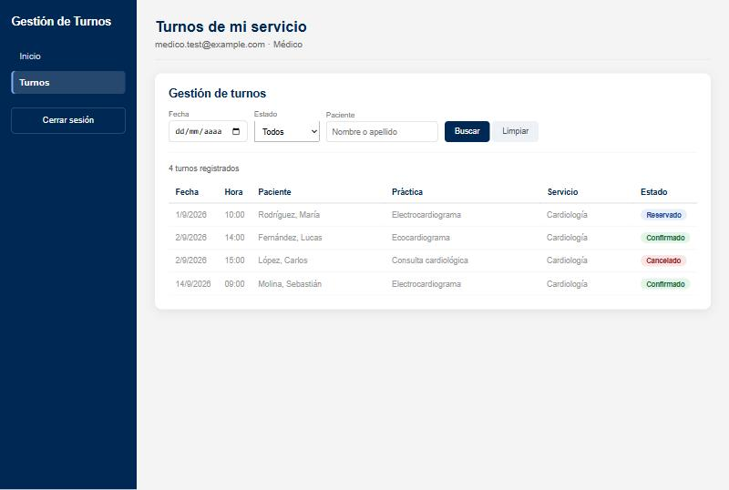
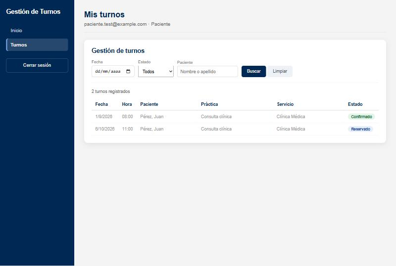
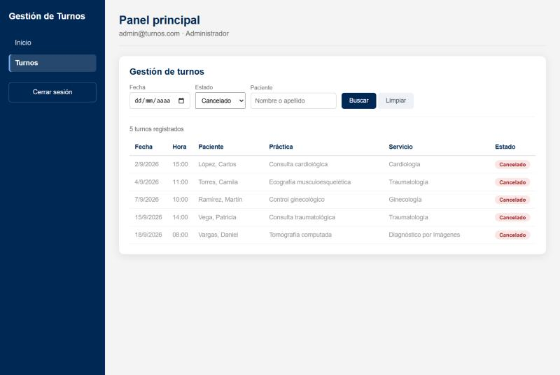
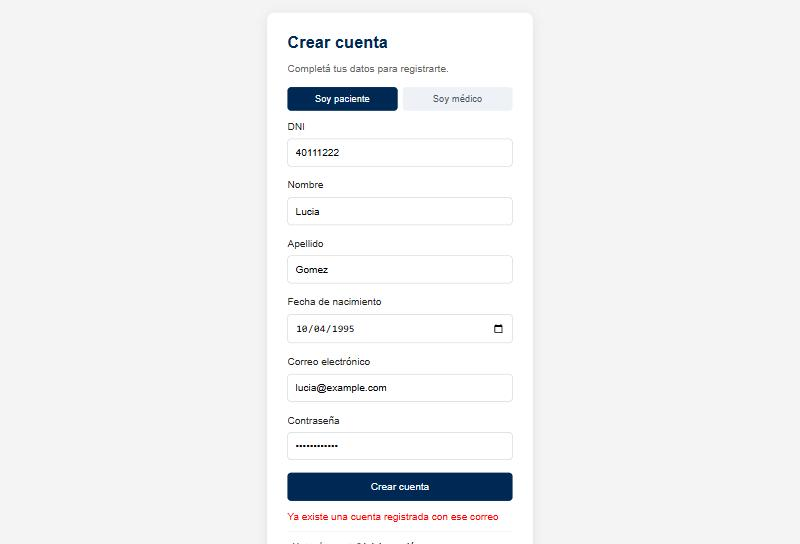

Informe de modificaciones · 2.º Parcial de Programación III · CENT 35 · 2026
Antes de este cambio se podía reservar una radiografía asignando un ecógrafo: el sistema
verificaba que ambos identificadores existieran, pero no que pudieran usarse juntos. La
validación consulta la tabla practica_equipo, que indica qué equipos sirven
para cada práctica, y rechaza la operación cuando la combinación no es válida.
La versión anterior comparaba únicamente la hora exacta, de modo que dos estudios de
sesenta minutos a las 10:00 y a las 10:30 se aceptaban aunque se pisaran. Ahora cada turno
ocupa el intervalo que va desde su hora hasta la hora más la duración de su práctica
(practica.duracion), y se rechaza cualquier turno cuyo intervalo se cruce con
otro ya reservado. La misma comprobación se aplica a la disponibilidad del equipo.
Se incorporó la posibilidad de consultar los turnos filtrando por fecha, estado y nombre o
apellido del paciente, pudiendo combinar los criterios entre sí. La operación recorre las
tres capas del sistema: el formulario del panel arma los parámetros, api.js
los envía por querystring, el controlador los lee de req.query y el
servicio construye con ellos una cláusula WHERE dinámica, siempre con
consultas parametrizadas.
El recorte por perfil se aplica después de los filtros enviados por el usuario, de manera que un paciente no puede ampliar su alcance indicando el documento de otra persona: el sistema continúa devolviendo únicamente sus propios turnos.
Hasta esta entrega todas las rutas de turnos estaban reservadas al administrador. Se definieron permisos diferenciados para los tres perfiles, aplicados tanto en el servidor como en la interfaz.
| Operación | Administrador | Médico | Paciente |
|---|---|---|---|
| Consultar turnos | Todos | Los de su servicio | Los propios |
| Crear, modificar y eliminar | Sí | No | No |
| Confirmar | Sí | Sí | No |
| Cancelar | Sí | Sí | Los propios |
El control se aplica en tres niveles sucesivos:
| Archivo | Modificación realizada |
|---|---|
validators/turnoValidator.js | Las dos validaciones nuevas: compatibilidad del equipo y detección de superposición por duración. |
services/turnoService.js | Filtros dinámicos en la consulta de turnos y funciones para determinar el servicio de un médico y de un turno. |
controllers/controller.js | Recorte de datos según el perfil y verificación de pertenencia del turno. |
routes/router.js | Cada ruta declara los roles habilitados, en lugar de restringir todo al administrador. |
services/authService.jscontrollers/authController.js | El token incorpora el documento del paciente y la matrícula del médico, datos necesarios para el recorte. |
frontend/js/dashboard.js | Navegación del menú, formulario de filtros y adaptación de la pantalla al perfil. |
frontend/pages/dashboard.htmlfrontend/css/estilos.css | Formulario de búsqueda y estilos de la tabla de turnos. |
frontend/js/api.js | Envío de los filtros por querystring. |




